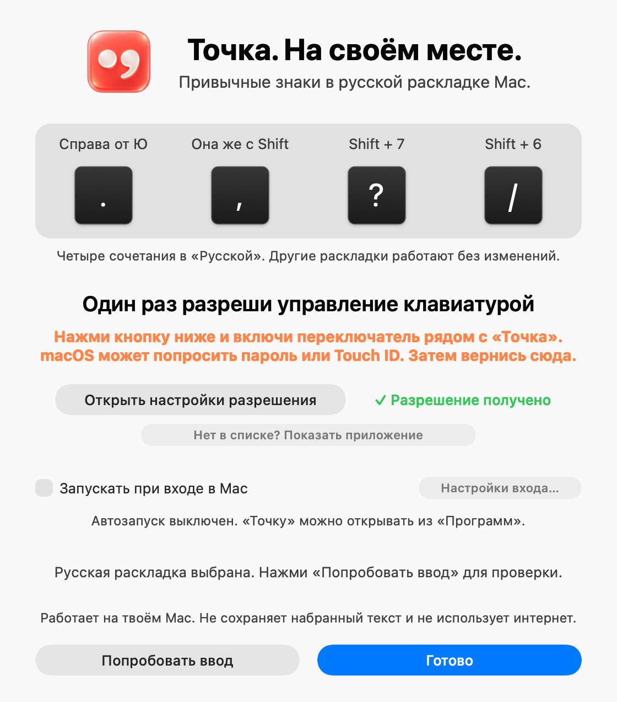

Точка и запятая на MacBook — на своих местах
В русской раскладке Mac точка спрятана за Shift+7, а запятая — за Shift+6. «Точка» возвращает их на клавишу справа от Ю, как на ПК.

Четыре клавиши — и всё
Только в стандартной раскладке «Русская». Английская, «Русская — ПК» и любые другие раскладки работают как раньше.
Справа от Ю
Shift + справа от Ю
Shift + 7
Shift + 6
Сочетания с ⌘, Control, Option и Fn не трогаются, поэтому шорткаты вроде ⌘/ работают как обычно. Включить и выключить «Точку» можно одним кликом по значку в строке меню.
Почему этому можно доверять
Чтобы менять знаки, приложению нужно разрешение macOS на управление клавиатурой. Это серьёзный доступ, поэтому всё, что с ним делает «Точка», можно проверить самому.
✓Не записывает ввод
Видит нажатие, решает, менять ли знак, и сразу отдаёт его дальше. Ничего не сохраняет. Вот эти 16 строк кода.
✓Не выходит в интернет
В программе нет сетевого кода и аналитики. Можно проверить в Терминале или файрволом вроде LuLu: lsof -i -a -p $(pgrep -x Tochka) ничего не покажет.
✓Открытый и маленький код
Около 700 строк на Swift и только системные библиотеки Apple, без сторонних зависимостей. Лицензия MIT. Подробно о конфиденциальности.
✓Собрано GitHub, а не автором
Файл для скачивания собирают сервера GitHub из открытого кода и подписывают аттестацией происхождения. Проверить:
gh attestation verify Tochka.dmg --repo rolexx671/TochkaУстановка за минуту
Понадобится одно подтверждение macOS и одно разрешение.
- Скачай Tochka.dmg и открой его.
- Перетащи «Точку» в папку «Программы» и запусти её оттуда.
- macOS скажет, что не может проверить разработчика. Нажми «Готово», открой Системные настройки → Конфиденциальность и безопасность, прокрути вниз и нажми «Всё равно открыть».
- В окне «Точки» нажми «Открыть разрешение macOS» и включи переключатель рядом с «Точка». Готово: в строке меню появится коралловый значок.
Вопросы
Как поставить точку на макбуке без программ?
В стандартной русской раскладке Mac точка — это Shift + 7, запятая — Shift + 6.
Можно также добавить раскладку «Русская — ПК»: Системные настройки → Клавиатура → Источники ввода → Изменить… → «+» → Русский → «Русская — ПК». В ней точка и запятая стоят справа от Ю, но вместе с ними переезжают и другие знаки: Ё, точка с запятой, двоеточие, процент. «Точка» меняет только четыре сочетания, а остальное оставляет привычным для Mac.
Зачем приложению разрешение «Универсальный доступ»?
macOS позволяет менять нажатия клавиш только программам с этим разрешением. Его же используют Karabiner-Elements, Rectangle, Raycast и другие утилиты. Что «Точка» делает с ним, описано со ссылками на строки кода.
Работает ли в полях паролей?
Нет. В полях паролей macOS включает защищённый ввод и сама перестаёт передавать нажатия таким программам. Там будут обычные знаки Mac.
Как временно выключить или удалить?
Левый клик по значку в строке меню включает и выключает «Точку». Чтобы удалить её, выбери в меню значка (правый клик) «Завершить «Точку»», перемести приложение из «Программ» в Корзину и убери его из списка «Универсальный доступ».
Сколько стоит?
Нисколько. «Точка» бесплатная и распространяется по лицензии MIT, без рекламы, подписок и сбора данных.
Нашёл ошибку или есть идея
Напиши в Issues на GitHub.